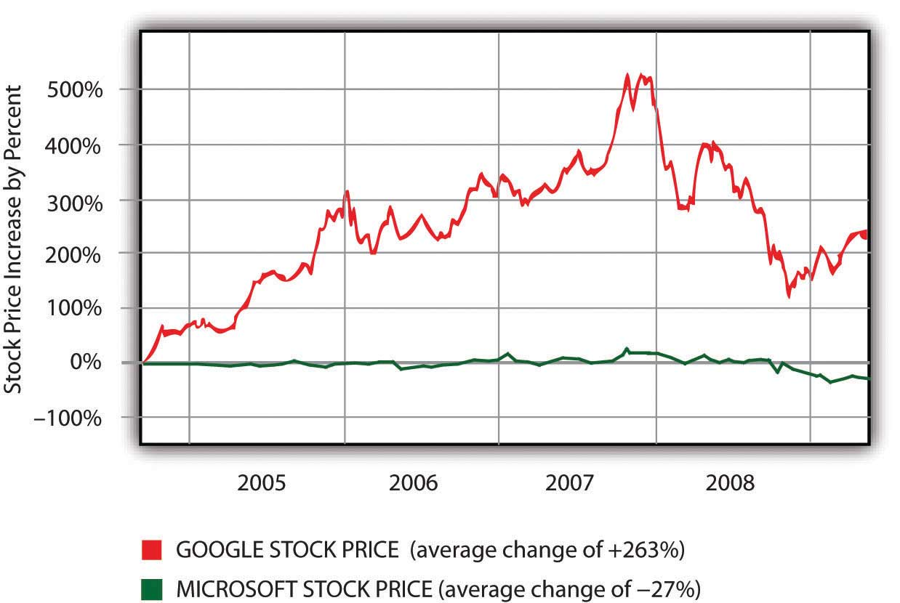

After studying this section you should be able to do the following:
Google has been growing like gangbusters, but the firm’s twin engines of revenue growth—ads served on search and through its ad networks—will inevitably mature. And it will likely be difficult for Google to find new growth markets that are as lucrative as these. Emerging advertising outlets such as social networks and mobile have lower click-through rates than conventional advertising, suggesting that Google will have to work harder for less money.
For a look at what can happen when maturity hits, check out Microsoft. The House that Gates Built is more profitable than Google, and continues to dominate the incredibly lucrative markets served by Windows and Office. But these markets haven’t grown much for over a decade. In industrialized nations, most Windows and Office purchases come not from growth, but when existing users upgrade or buy new machines. And without substantial year-on-year growth, the stock price doesn’t move.
Figure 8.18 A Comparison of Roughly Five Years of Stock Price Change—Google (GOOG) versus Microsoft (MSFT)
For big firms like Microsoft and Google, pushing stock price north requires not just new markets, but billion-dollar ones. Adding even one hundred million dollars in new revenues doesn’t do much for firms bringing in twenty-one billion dollars and fifty-one billion dollars a year, respectively. That’s why you see Microsoft swinging for the fences, investing in the uncertain, but potentially gargantuan markets of video games, mobile phone software, cloud computing (see Chapter 10 "Software in Flux: Partly Cloudy and Sometimes Free"), music and video, and of course, search and everything else that fuels online ad revenue.
PageRank is by no means the last word in search, and offerings from Google and its rivals continue to evolve. Google supplements PageRank results with news, photos, video, and other categorizations (click the “Show options…” link above your next Google search). Yahoo! is continually refining its search algorithms and presentation (click the little “down” arrow at the top of the firm’s search results for additional categorizations and suggestions). And Microsoft’s third entry into the search market, the “decision engine” Bing, sports nifty tweaks for specific kinds of queries. Restaurant searches in Bing are bundled with ratings stars, product searches show up with reviews and price comparisons, and airline flight searches not only list flight schedules and fares, but also a projection on whether those fares are likely go up or down. Bing also comes with a one-hundred-million-dollar marketing budget, showing that Microsoft is serious about moving its search market share out of the single digits. And in the weeks following Bing’s mid-2009 introduction, the search engine did deliver Microsoft’s first substantive search engine market share gain in years.
New tools like the Wolfram Alpha “knowledge engine” (and to a lesser extent, Google Squared) move beyond Web page rankings and instead aggregate data for comparison, formatting findings in tables and graphs. Web sites are also starting to wrap data in invisible tags that can be recognized by search engines, analysis tools, and other services. If a search engine can tell that a number on a restaurant’s Web site is, for example, either a street address, an average entrée price, or the seating capacity, it will be much easier for computer programs to accurately categorize, compare, and present this information. This is what geeks are talking about when they refer to the semantic WebSites that wrap data in invisible tags that can be recognized by search engines, analysis tools, and other services to make it easier for computer programs to accurately categorize, compare, and present this information.. All signs point to more innovation, more competition, and an increasingly more useful Internet!
Both Google and Microsoft are on a collision course. But there’s also an impressive roster of additional firms circling this space, each with the potential to be competitors, collaborators, merger partners, or all of the above. While wounded and shrinking, Yahoo! is still a powerhouse, ranking ahead of Google in some overall traffic statistics. Add in eBay, Facebook, Twitter, Amazon, SalesForce.com, Apple, Netflix, the video game industry, telecom and mobile carriers, cable firms, and the major media companies, and the next few years have the makings of a big, brutal fight.
Google’s scale advantages in search and its network effects advantages in advertising were outlined earlier. The firm also leads in search/ad experience and expertise and continues to offer a network reach that’s unmatched. But the strength of Google’s other competitive resources is less clear.
Within Google’s ad network, there are switching costs for advertisers and for content providers. Google partners have set up accounts and are familiar with the firm’s tools and analytics. Content providers would also need to modify Web sites to replace AdSense or DoubleClick ads with rivals. But choosing Google doesn’t cut out the competition. Many advertisers and content providers participate in multiple ad networks, making it easier to shift business from one firm to another. That likely means that Google will have to retain its partners by offering superior value.
Another vulnerability may exist with search consumers. While Google’s brand is strong, switching costs for search users are incredibly low. Move from Google.com to Ask.com and you actually save three letters of typing!
Still, there are no signs that Google’s search leadership is in jeopardy. So far users have been creatures of habit, returning to Google despite heavy marketing by rivals. And in Google’s first decade, no rival has offered technology compelling enough to woo away the googling masses—the firm’s share has only increased. Defeating Google with some sort of technical advantage will be difficult, since Web-based innovation can often be quickly imitated.
The Google Toolbar helps reinforce search habits among those who have it installed, and Google pays the Mozilla foundation (the folks behind the Firefox browser) upwards of sixty-six million dollars a year to serve as its default search option for the open source browser.S. Shankland, “Thanks, Google: Mozilla Revenue Hits $75 Million,” CNET, November 19, 2008. But Google’s track record in expanding reach through distribution deals is mixed. The firm spent nearly one billion dollars to have MySpace run AdSense ads, but Google has publicly stated that social network advertising has not been as lucrative as it had hoped (see Chapter 7 "Facebook: Building a Business from the Social Graph"). The firm has also spent nearly one billion dollars to have Dell preinstall its computers with the Google browser toolbar and Google desktop search products. But in 2009, Microsoft inked deals that displaced Google on Dell machines, and it also edged Google out in a five-year search contract with Verizon Wireless.N. Wingfield, “Microsoft Wins Key Search Deals,” Wall Street Journal, January 8, 2009.
Microsoft could benefit from embedding its Bing search engine into its most popular products (imagine putting Bing in the right-mouseclick menu alongside cut, copy, and paste). But with Internet Explorer market share above 65 percent, Office above 80 percent, and Windows at roughly 90 percent,Data source: http://marketshare.hitslink.com; and E. Montalbano, “Forrester: Microsoft Office in No Danger from Competitors,” InfoWorld, June 4, 2009. this seems unlikely.
European antitrust officials have already taken action against Redmond’s bundling Windows Media Player and Internet Explorer with Windows. Add in a less favorable antitrust climate in the United States, and tying any of these products to Bing is almost certainly out of bounds. What’s not clear is whether or not regulators would allow Bing to be bundled with less dominant Microsoft offerings, such as mobile phone software, Xbox, and MSN.
But increasingly, Google is also an antitrust target. Microsoft has itself raised antitrust concerns against Google, unsuccessfully lobbying both U.S. and European authorities to block the firm’s acquisition of DoubleClick.A. Broach, “On Capitol Hill, Google and Microsoft Spar over DoubleClick,” CNET, September 27, 2007; and D. Kawamoto and A. Broach, “EU Extends Review of Google-DoubleClick Merger,” CNET, November 13, 2007. Google was forced to abandoned a fall, 2008, search advertising partnership with Yahoo! after the Justice Department indicated its intention to block the agreement. The Justice Department is also investigating a Google settlement with the Authors’ Guild, a deal in which critics have suggested that Google scored a near monopoly on certain book scanning, searching, and data serving rights.S. Wildstrom, “Google Book Search and the Dog in the Manger,” BusinessWeek, April 18, 2009. And yet another probe is investigating whether Google colluded with Apple, Yahoo! and other firms to limit efforts to hire away top talent.E. Buskirk, “Antitrust Probe to Review Hiring Practices at Apple, Google, Yahoo: Report,” Wired News, June 3, 2009.
Of course, being big isn’t enough to violate U.S. antitrust law. Harvard Law’s Andrew Gavil says, “You’ve got to be big, and you have to be bad. You have to be both.”S. Lohr and M. Helft, “New Mood in Antitrust May Target Google,” New York Times, May 18, 2009. This may be a difficult case to make against a firm that has a history of being a relentless supporter of open computing standards. And as mentioned earlier, there is little forcing users to stick with Google—the firm must continue to win this market on its own merits. While Google may escape all of these investigations, increased antitrust scrutiny is a downside that comes along with the advantages of market-dominating scale.
Google has been a champion of increased Internet access. But altruism aside, more net access also means a greater likelihood of ad revenue.
Google’s effort to catalyze Internet use worldwide comes through on multiple fronts. In the United States, Google has supported (with varying degrees of success) efforts to offer free wi-fi in San Francisco and Mountain View. But most ambitiously, Google is also a major backer (along with Liberty Global and HSBC) of the O3b satellite network. O3b stands for “the other three billion” of the world’s population who currently lack Internet access. O3b hopes to have sixteen satellites circling the globe by late 2010, blanketing underserved regions with low latencyLow delay. (low delay), high-speed Internet access.O. Malik, “Google Invests in Satellite Broadband Startup,” GigaOM, September 9, 2008. With Moore’s Law dropping computing costs as world income levels rise, Google hopes to empower the currently disenfranchised masses to start surfing. Good for global economies, good for living standards, and good for Google.
Another way Google can lower the cost of surfing is by giving mobile phone software away for free. That’s the thinking behind the firm’s Android offering. With Android, Google provides mobile phone vendors with a Linux-based operating system, supporting tools, standards, and an application marketplace akin to Apple’s AppStore. Android itself isn’t ad-supported—there aren’t Google ads embedded in the OS. But the hope is that if handset manufacturers don’t have to write their own software, the cost of wireless mobile devices will go down. And cheaper devices mean that more users will have access to the mobile Internet, adding more ad-serving opportunities for Google and its partner sites.
While Android started as a mobile phone operating system and software stack, its use has been expanded by hardware manufacturers; it is now serving as a Windows alternative on low-cost, Internet-equipped laptops (netbooks) and eBook readers. And in 2009, Google announced a direct strike at the netbook—its Chrome OS. Powered by a combination of open source Linux and Google’s open source Chrome browser, the Chrome OS is specifically designed to provide a lightweight, but consistent user interface for applications that otherwise live “in the clouds,” preferably residing on Google’s server farms (see Chapter 10 "Software in Flux: Partly Cloudy and Sometimes Free"). And a tailored Android or Chrome OS could conceivably power net access in a host of devices, including televisions, set top boxes, and automobiles. Google has dabbled in selling ads for television (as well as radio and print). There may be considerable potential in bringing variants of ad targeting technology, search, and a host of other services across these devices.
Google has also successfully lobbied the U.S. government to force wireless telecom carriers to be more open, dismantling what are known in the industry as walled gardensA closed network or single set of services controlled by one dominant firm.. Before Google’s lobbying efforts, mobile carriers could act as gatekeepers, screening out hardware providers and software services from their networks. Now, paying customers of carriers that operate over the recently allocated U.S. wireless spectrum will have access to a choice of hardware and less restrictive access to Web sites and services. And Google hopes this expands its ability to compete without obstruction.
Then there’s Internet video, with Google in the lead here too. It’s tough to imagine any peer-produced video site displacing YouTube. Users go to YouTube because there’s more content, while amateur content providers go there seeking more users (classic two-sided network effects). This critical advantage was the main reason why, in 2006, Google paid $1.65 billion for what was then just a twenty-month-old startup.
That popularity comes at a price. Even with falling bandwidth and storage costs, at twenty hours of video uploaded to YouTube every minute, the cost to store and serve this content is cripplingly large.E. Nakashima, “YouTube Ordered to Release User Data,” Washington Post, July 4, 2008. Credit Suisse estimates that in 2009, YouTube will bring in roughly $240 million in ad revenue, pitted against $711 million in operating expenses. That’s a shortfall of more than $470 million. Analysts estimate that for YouTube to break even, it would need to achieve an ad CPM of $9.48 on each of the roughly seventy-five billion streams it’ll serve up this year. A tough task. For comparison, Hulu (a site that specializes in offering ad-supported streams of television shows and movies) earns CPM rates of thirty dollars and shares about 70 percent of this with copyright holders. Most user-generated content sports CPM rates south of a buck.B. Wayne, “YouTube Is Doomed,” Silicon Alley Insider, April 9, 2009. Some differ with the Credit Suisse report—RampRate pegs the losses at $174 million. In fact, it may be in Google’s interest to allow others to think of YouTube as more of a money pit than it really is. That perception might keep rivals away longer, allowing the firm to solidify its dominant position while getting the revenue model right. Even as a public company, Google can keep mum about YouTube specifics. Says the firm’s CFO, “We know our cost position, but nobody else does.”“How Can YouTube Survive?” Independent, July 7, 2009.
The explosion of video uploading is also adding to costs as more cell phones become net-equipped video cameras. YouTube’s mobile uploads were up 400 percent in just the first week following the launch of the video-equipped iPhone 3GS.J. Kincaid, “YouTube Mobile Uploads Up 400% Since iPhone 3GS Launch,” TechCrunch, June 25, 2009. Viewing will also skyrocket as mobile devices and television sets ship with YouTube access, adding to revenue potential. The firm is still experimenting with ad models—these include traditional banner and text ads, plus ads transparently layered across the bottom 20 percent of the screen, preroll commercials that appear before the selected video, and more. Google has both the money and time to invest in nurturing this market, and it continues to be hesitant in saturating the media with ads that may annoy users and constrain adoption.
In 2007 the firm announced a tagline to sum up its intensions: “search, ads, and apps.” Google is king of the first two, but this last item hasn’t matured to the point where it impacts the firm’s financials.
Experimentation and innovation are deeply ingrained in Google’s tech-centric culture, and this has led to a flood of product offerings. Google released more than 360 products in 2008, and another 120 in Q1 2009.M. Shiels, “Google Unveils ‘Smarter Search,’” BBC News, May 13, 2009. It’s also cancelled several along the way, including Jaiku (which couldn’t beat Twitter), Google Video (which was superseded by the YouTube acquisition), and a bunch more you’ve likely not heard of, like Dodgeball, Notebook, Catalog Search, and Mashup Editor.R. Needleman, “Google Killing Jaiku, Dodgeball, Notebook, Other Projects,” CNET, January 14, 2009.
With all this innovation, it’s tough to stay current with Google’s cutting edge product portfolio. But the company does offer “beta” releases of some projects, and invites the public to try out and comment on its many experiments. To see some of these efforts in action, visit Google Labs at http://googlelabs.com. And to see a current list of more mature offerings, check out http://www.google.com/options.
Google’s “Apps” are mostly Web-based software-as-a-service offerings. Apps include an Office-style suite that sports a word processor, presentation tool, and spreadsheet, all served through a browser. While initially clunky, the products are constantly being refined. The spreadsheet product, for example, has been seeing new releases every two weeks, with features such as graphing and pivot tables inching it closer in capabilities to desktop alternatives.D. Girouard, “Google Inc. Presentation” (Bank of America and Merrill Lynch 2009 Technology Conference, New York, June 4, 2009). And new browser standards, such as HTML 5, will make it even easier for what lives in the browser to mimic what you’re currently using on your desktop.
Google also offers Gears, a product that allows compatible apps to be used offline when net access isn’t available. That’ll be critical as long as Internet access is less reliable than your hard drive, but online collaboration is where these products can really excel (no pun intended). Most Google apps allow not only group viewing, but also collaborative editing, common storage, and version control. Google’s collaboration push also includes its wiki-like Google Sites tool, and a new platform called Wave, billed as a sort of next-step evolving beyond e-mail and instant messaging.
Unknown is how much money Google will make off all of this. Consumers and small businesses have free access to these products, with usage for up to fifty users funded by in-app ads. But is there much of a market serving ads to people working on spreadsheets? Enterprises can gain additional, ad-free licenses for a fee. While users have been reluctant to give up Microsoft Office, many have individually migrated to Google’s Web-based e-mail and calendar tools. Google’s enterprise apps group will now do the same thing for organizations, acting as a sort of outsourcer by running e-mail, calendar, and other services for a firm; all while handling upgrades, spam screening, virus protection, backup, and other administrative burdens. Arizona State University, biotech giant Genentech, and auto parts firm Valeo are among the Google partners that have signed on to make the firm’s app offerings available to thousands.S. Coughlin, “Google’s E-mail for Universities,” BBC News, June 11, 2007; Q. Hardy, “Google Muscles Further into Business Software,” Forbes, February 28, 2008; and T. Claburn, “Google’s Cloud Evangelism Converts Enterprise Customers,” InformationWeek, May 13, 2009.
And of course, Microsoft won’t let Google take this market without a fight. Office 10 was announced along with a simplified, free, ad-supported, Web-based, online options for Word, Excel, PowerPoint, and OneNote; and Microsoft can also migrate applications like e-mail and calendaring off corporate computers and onto Microsoft’s server farms.
It’s not until considered in its entirety that one gets a sense for what Google has the potential to achieve. It’s possible that increasing numbers of users worldwide will adopt light, cheap netbooks and other devices powered by free Google software (Android, Google’s Chrome browser and Chrome OS). Productivity apps, e-mail, calendaring, and collaboration tools will all exist “in the cloud,” accessible through any browser, with files stored on Google’s servers in a way that minimizes hard drive needs. Google will entertain you, help you find the information you need, help you shop, handle payment (Google Checkout), and more. And the firms you engage online may increasingly turn to Google to replace their existing hardware and software infrastructure with corporate computing platforms like Google Apps Engine (see Chapter 10 "Software in Flux: Partly Cloudy and Sometimes Free"). All of this would be based on open standards, but switching costs, scale, and increasing returns from expertise across these efforts could yield enormous advantages.
Studying Google allowed us to learn about search and the infrastructure that powers this critical technology. We’ve studied the business of ads, covering search advertising, ad networks, and ad targeting in a way that blends strategic and technology issues. And we’ve covered the ethical, legal, growth, and competitive challenges that Google and its rivals face. Studying Google in this context should not only help you understand what’s happening today, it should also help you develop critical thinking skills for assessing the opportunities and threats that will emerge across industries as technologies continue to evolve.